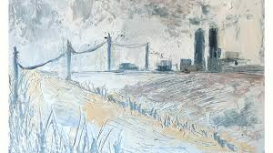
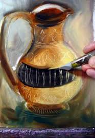
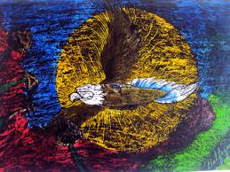
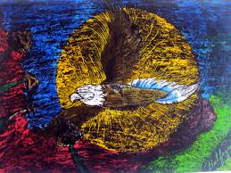
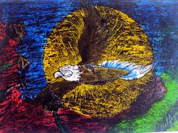
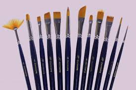

Explora por Categoría
Pintura
Óleo, acrílico, acuarela y más
12 técnicasEscultura
Talla, modelado, fundición
8 técnicasDigital
3D, ilustración, fotomanipulación
7 técnicasMixtas
Collage, ensamblaje, experimentales
9 técnicasTécnica Destacada
Esgrafiado al Óleo
 alt="Esgrafiado al óleo">

 



Materiales necesarios
- Óleos de calidad profesional
- Medio de secado lento (como Liquin)
- Espátulas de diferentes tamaños
- Herramientas de esgrafiado (peines, rascadores, palillos)
- Lienzo de lino preparado
- Aceite de linaza
- Trementina sin olor
Procedimiento
- Aplicar una capa base de color oscuro y dejar secar parcialmente
- Añadir capas de color contrastante mientras la base está aún húmeda
- Utilizar herramientas de esgrafiado para revelar las capas inferiores
- Repetir el proceso para crear complejidad y profundidad
- Dejar secar completamente antes de aplicar barniz final
Guía de Materiales
Óleo
Marcas recomendadas:
- Winsor & Newton - Artists' Oil Color
- Old Holland - Classic Oil Colors
- Sennelier - Artist Oils
- Michael Harding - Handmade Oil Colours
Ventajas
- Tiempo de trabajo prolongado
- Capacidad para mezclas complejas
- Brillantez y profundidad de color
Desventajas
- Tiempo de secado lento
- Requiere solventes
- Precio elevado en calidad profesional
Acrílico
Comparativa de Acrílicos Profesionales
| Marca | Viscosidad | Pigmentación | Precio/ml | Mejor para |
|---|---|---|---|---|
| Golden Heavy Body | Alta | Excelente | $$$ | Empastes, texturas |
| Liquitex Professional | Media | Muy buena | $$ | Uso general |
| Winsor & Newton Galeria | Media-baja | Buena | $ | Estudiantes, prácticas |
| Schmincke Primacryl | Variable | Excelente | $$$$ | Profesionales exigentes |
Herramientas Especializadas
